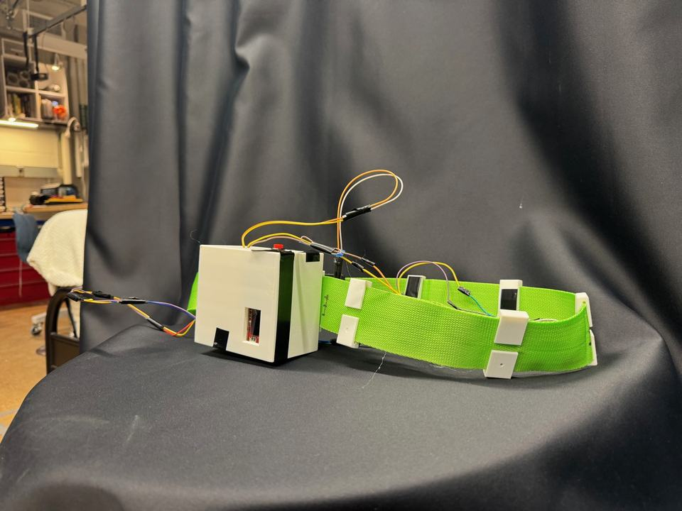
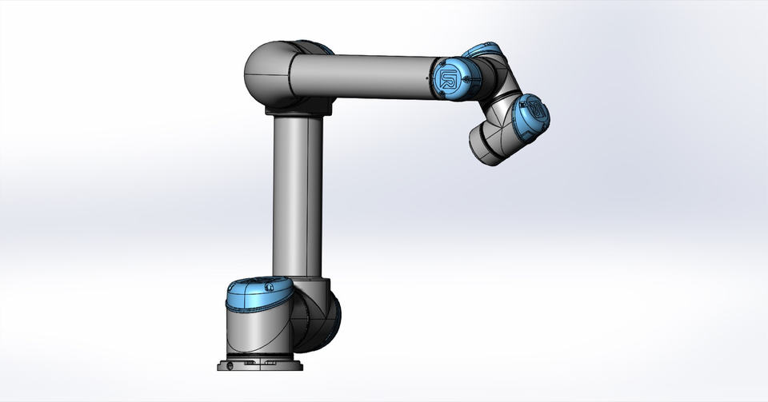
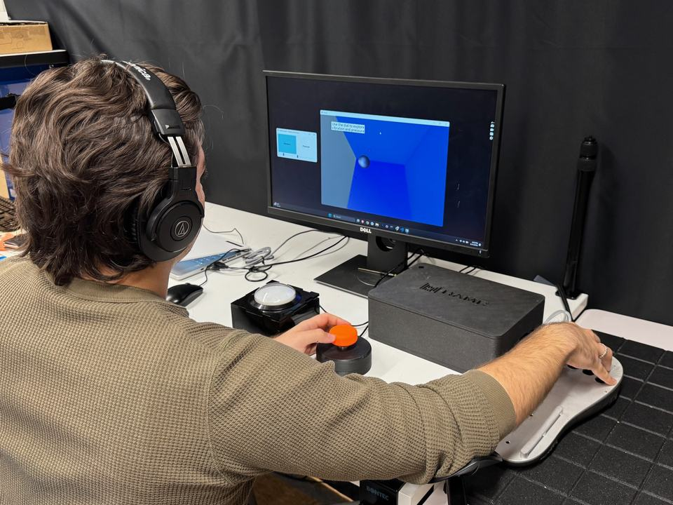
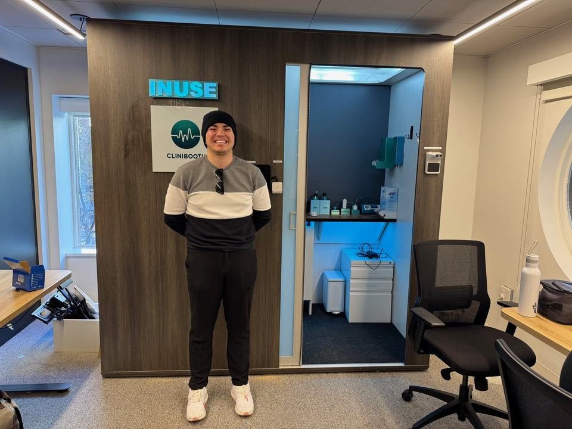
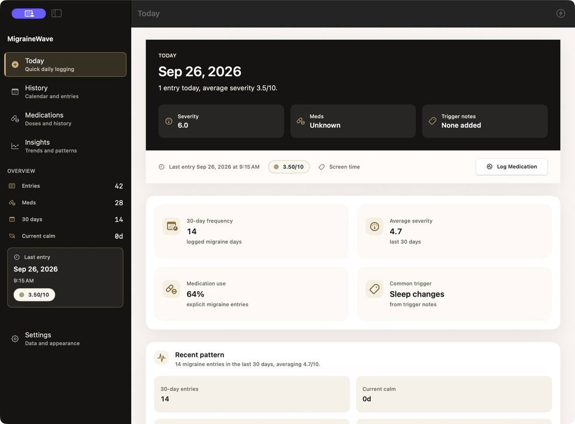

Ph.D. researcher · Mechanical Engineering · Vanderbilt
Engineering you can feel.
I’m Berk Kasimcan. I design haptic interfaces, robots, and wearable devices around the people who use them, and I build them to be affordable enough to reach those people.

About
I build technology that is affordable, accessible, and open, so it reaches the people who need it most.
I’m a Ph.D. student in Mechanical Engineering at Vanderbilt, advised by Karl Zelik in the Center for Rehabilitation Engineering and Assistive Technology. Before that I earned an M.S. in Mechanical Engineering at Johns Hopkins in Jeremy D. Brown’s Haptics and Medical Robotics Lab, and a B.S. and M.S. in Bioengineering at George Mason. Along the way I did research at Harvard, the University of Michigan, and the University of Otago.
Outside the lab I work on science policy and diplomacy, most recently as an inaugural scholar in the ONE Campaign’s Young Professional Program. I volunteer, teach when I can, and I’m always building a project of my own.
- Research
- Haptic feedback, wearable biomechanics, rehabilitation and assistive devices
- Toolbox
- Mechanism design, embedded sensing and control, instrumentation, statistics
- Languages
- English, Turkish, Spanish
Selected work
Machines built around people.

Haptics · Johns Hopkins
A belt that points the way by touch
A vibrotactile belt that turns heading and distance into vibration on the waist, with UWB ranging and IMU heading for navigation without sight or sound.
Read the project
Robotics · Johns Hopkins
UR5e push-and-place
Resolved-rate control and inverse kinematics, compared on the same manipulation task.

Haptics research · HAMR Lab
Cross-modal matching
How people match intensity across vision, vibration, and pressure, for hand rehabilitation.

MedTech · Clinibooth
A telemedicine diagnostic booth
Led design of the company’s first booth: 100+ CAD and 3D-print iterations to fit EKG, spirometry, and strep testing into one accessible space.

Software · Personal project
MigraineWave for Mac
A private, local-only migraine journal in SwiftUI, with trend insights and a doctor-ready report.
Path
Where I’ve trained.
Six universities and three industry teams since 2021. Degrees on top, research and industry below.
Degrees
- B.S. BioengineeringGeorge Mason · Honors College2021–24
- M.S. BioengineeringGeorge Mason · GPA 4.002024–25
- M.S. Mechanical EngineeringJohns Hopkins · HAMR Lab · GPA 4.002025–26
- Ph.D. Mechanical EngineeringVanderbilt · Zelik Lab, CREATE2026–30
Research and industry
- Prostate IR Centers USAR&D intern · training models2022–24
- University of OtagoCakmak Lab · ear morphology2022–23
- Johns Hopkins, McCann LabML-assisted therapeutic support2023–24
- University of MichiganShtein Lab · NSF REU2023
- George Mason, ImPoWeR LabHand tactile-proprioceptive assessment2023–24
- Harvard, Wyss InstituteAizenberg Group · liquid windows2024
- CliniboothDesign lead · diagnostic booth2024
- Inova NeurosurgeryOutcomes analytics2025
Recognition
A few things I’m proud of.
- 1 of 1Chair AwardGeorge Mason Bioengineering, 2024. The department’s highest award, given to one student.
- BestPoster presentationYale Biomedical Engineering Conference, 2023, among top student projects from 25 schools.
- 9 of 1,000+Stu Shea Peraton ScholarOne of nine selected from more than a thousand applicants, 2023.
- FirstONE Campaign cohortInaugural scholar, Young Professional Program in science policy and advocacy, 2026.
Beyond the lab
What keeps me curious.
- Formula 1 & carsThe engineering behind every race weekend
- RocketryNASA Student Launch team, 2020–2021
- RoboticsSide builds of my own
- Basketball & soccerPlaying and watching
- TravelingTurkish and American roots, always one more trip
- Baking & cookingExperimenting in the kitchen
- MusicThe soundtrack to every build
- VolunteeringOutreach, teaching, and mentoring
Contact